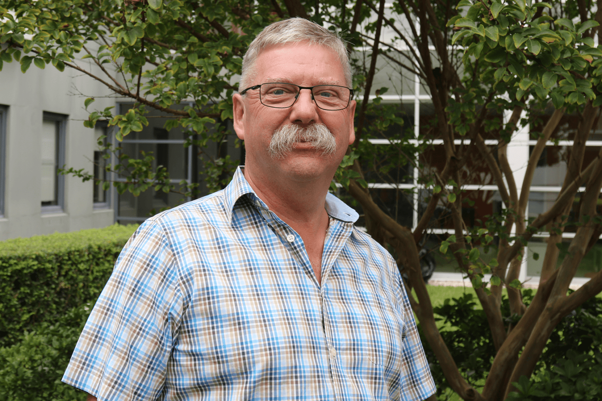

David
“I wasn’t diagnosed with bipolar 1 until I was 48 years old. I’m 65 now. So the vast majority of my life and career was spent undiagnosed and untreated.I saw a psychiatrist when I was 28 and hated it. I was a stupid young guy, I thought I could take care of my own mental health – that was the worst decision of my life. What I hope people take from my presentations is some practical tips on how to reach out to someone if you think they need help, and how to reach out yourself if you’re not feeling well. I hope I give them that bit of knowledge and confidence to go, ‘This is not as scary as I thought.’
Elliot
Once I got a bit older, around Year 10 it became apparent that something was holding me back, although back then mental health wasn’t really something spoken about. I assumed it was only me who felt these feelings. By this stage my initial anxiety had transformed into a new beast, with depression and obsessive rumination at its core. I also had this impulsive streak which I thought was just a funny quirk of my personality. I was lonely all the time and had very low levels of self-esteem. I knew something needed to be done. At age 19, I finally saw a doctor after using the internet to research what exactly was going on. I was first diagnosed with Depression and Generalised Anxiety Disorder. I was prescribed medication, told to exercise, get plenty of sleep, and to see a psychologist. My strategies for getting well was to research – that was my first step.
Lisa Mcleod
“One of the things that has stood out for me over many years of working in clinical practice is that many of the people seeking help haven’t learned fundamental psychological skills, at school or in the workplace. Yet these are skills that are absolutely necessary and can be applied by anyone to manage challenges that life can throw at us. That’s why I was drawn to becoming a workplace mental health facilitator. What better way to reach large groups of people than at work. It makes sense, it’s where we spend the majority of our waking lives. Mental ill-health does not discriminate, so every organisation, big or small, does need to be across this. Knowing and understanding what to look for, and how to support people who may be struggling, can make all the difference in helping someone get back on track and continue with their working life.
Tasya
Initially, I found it overwhelming to find support because I felt like I had to take every step to getting better at once. In hindsight, every step counts, no matter how small it might feel, and each step could be taken in my own time, at my own pace. The first step I took was reaching out to a few close friends. After a few weeks I decided that I did not want to feel like a burden them anymore, although they assured me I wasn’t, so I chose to seek professional support through the school psychologist. I was first diagnosed with Depression and Generalised Anxiety Disorder when I was 15 years old in Year 10. A year later, I was also diagnosed with Post Traumatic Stress Disorder. I felt relieved when I got my initial diagnosis because I felt as though I could finally work towards managing my mental health. What really worked was when I started to meditate. Often, I was caught up in my head and meditating gave me a chance to not focus on anything but what was happening right then and there – to be present.
Bob
I began to put on weight and my personal behaviours became erratic. I was self-medicating, not exercising and had a poor diet. I became confused and irritable. I didn’t know how to fix things and simply put my mood swings down to having a bit of an off period. In early 2014 I was diagnosed with Post Traumatic Stress Disorder, Anxiety and Co-Morbid Depression. At first, learning this was somewhat distressing, but as time went on it provided clarity around my situation and became the first building block towards good management of my conditions. Since then, it has been a long and slow journey, but getting a good management plan in place with the right support team has been vital. Now, my holistic plan includes medication, exercise, improved diet and ongoing cognitive therapy. My ability now to openly discuss my journey within the community has been cathartic as well.
Sarah
“I’ve been working in clinical practice and mental health education for the last 20 years, mainly with adults but also with children and adolescents. I particularly enjoy working with anxiety and mood disorders because there’s such a strong evidence base for treating them. People can really flip their lives if they’re aware of the strategies and tools to effectively manage their symptoms. They can live a much a fuller life and not be debilitated by those symptoms. If a workplace has had mental health training, then they have an eye for prevention. They’re able to catch wellbeing concerns early, have effective conversations about them, and encourage staff to access appropriate support.